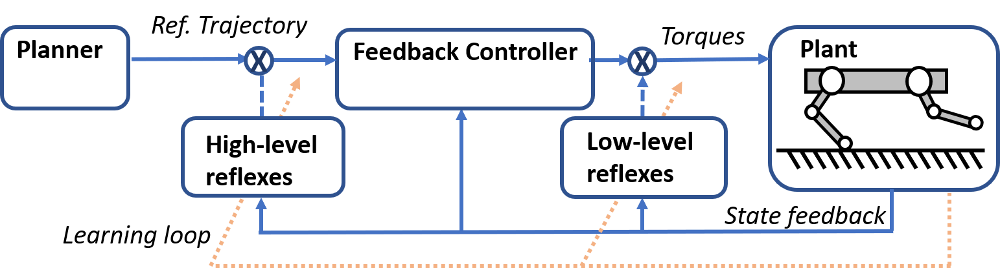
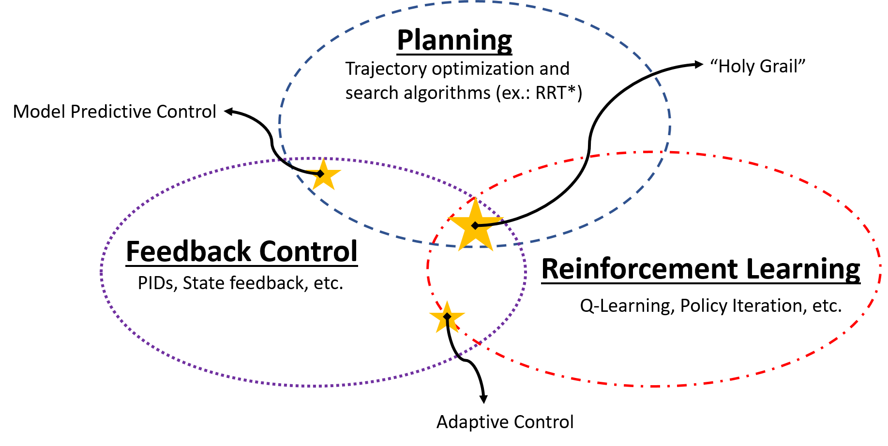

Abstract
We are working on new ways to leverage new AI tool for intelligent motion controllers in robotics.
Topics
The proposed research aims at developing an hybrid control architecture to leverage the best of both worlds (model-based and learning) for smarter motion controllers. More specifically, the short-term objectives are to: 1) Propose and evaluate novel control architectures to include learning in the low-level feedback loops. For instance, event-based reflex reactions overriding a baseline model-based controller. 2) Explore the use of physics-based features for accelerating the learning and universalizing the knowledge. For instance, correlating appropriate maneuvers to dimensionless numbers (friction coefficient, Froude number, etc.) instead of platform-specific sensor stimulus.
Ultimately, the proposed research aims to develop enabling technologies in terms of robotics mobility that will contribute to bring automation in new fields such as transportation (self-driving cars), mining, agriculture, inspection, surveillance and even home use (autonomous vacuum cleaners and lawn mowers).
Publications & Resources
Project Media


